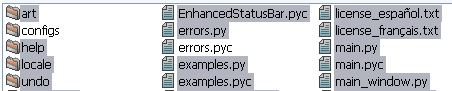

Le panneau Ramasseur est utilisé pour sélectionner quels fichiers ou dossiers seront renommés.
Pour sélectionner ou désélectionner un objet :

Cliquez-le! Si surligné (la couleur dépend du thème du système), cela signifie qu'il est sélectionné.
Cliquez le bouton Parcourir pour ouvrir une fenêtre vous permettant de sélectionner un chemin.
Cliquez le bouton OK après avoir entré ou collé un chemin.
Le contenu de ce chemin sera alors affiché dans la zone de sélection.
Pour faciliter le sélectionnement, il est possible de filtrer les résultats afin de montrer seulement les
fichiers ou dossiers qui vous intéressent.
Par défaut, seulement les objets qui contiennent le texte entré dans la zone texte Filtre seront affichés. Pour
rechercher des types de fichiers, utilisez un point «.», i.e. «.jpg» affichera seulement les fichiers du genre JPEG.
Le != (pas égal) est un modifiant négatif, c'est à dire que si cette case est cochée, seulement les objets NE contenant PAS
le Filtre seront affichés.
Il est aussi possible de filtrer par expression régulière.
Pour voir les dossiers contenus dans le chemin actuel, cochez Dossiers.
Pour voir les fichiers contenus dans le chemin actuel, cochez Fichiers.
Pour voir les fichiers contenus dans le chemin actuel et dans chaque sous-répertoire du chemin actuel, cochez Cheminer.
Notez que dans ce cas les dossiers ne seront pas affichés.
Ne vous tracassez pas! Inutile de sélectionner tous ou aucun objets, je vous donne ces deux boutons.